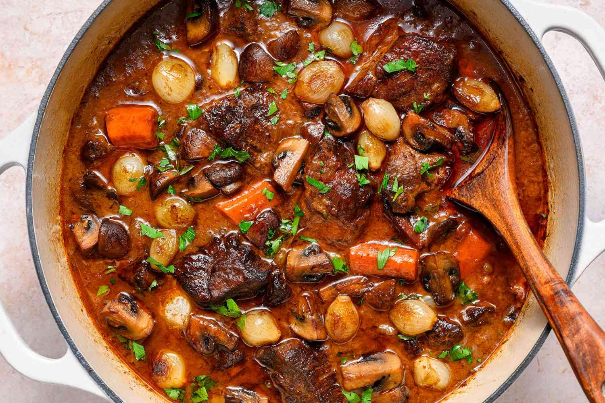

Beef Bourguignon

Description
Instant pot recipe for creating delicious beef bourguignon.
Ingredients
- Bacon
- Chuck roast
- Mushrooms
- Golden potatoes
- Carrots
- Chicken bone broth
- Salt
- Pepper
- Italian seasoning
- Worcestershire sauce (optional)
Steps
- Put olive oil in your instant pot and set to saute.
- When instant pot reads HOT, brown the bacon.
- Once bacon is browned, set aside on a plate.
- Add diced chuck roast to instant pot and saute until brown.
- Once chuck roast is browned, add half a cup of bone broth and scrape instant pot to remove brown bits.
- Cancel SAUTE mode.
- Add all ingredients to pot and set to PRESSURE mode (high).
- Cook for 45 minutes. Allow 10 minutes natural release.
- Once pressure cook has finished, set to SAUTE for 5 more minutes.